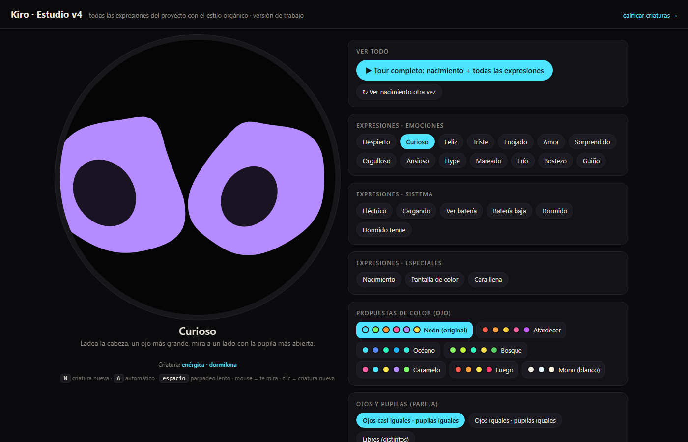
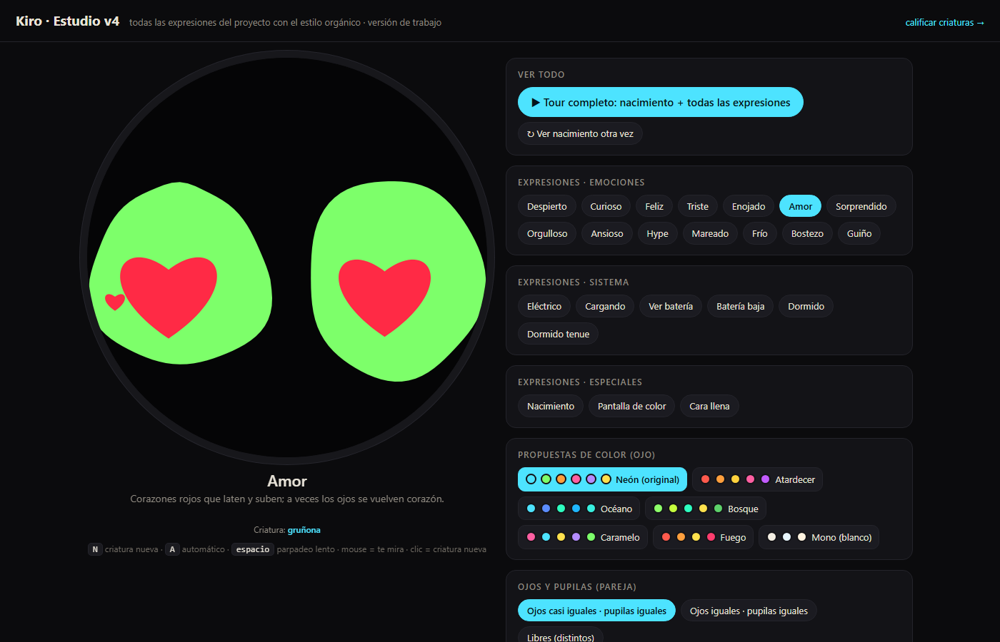
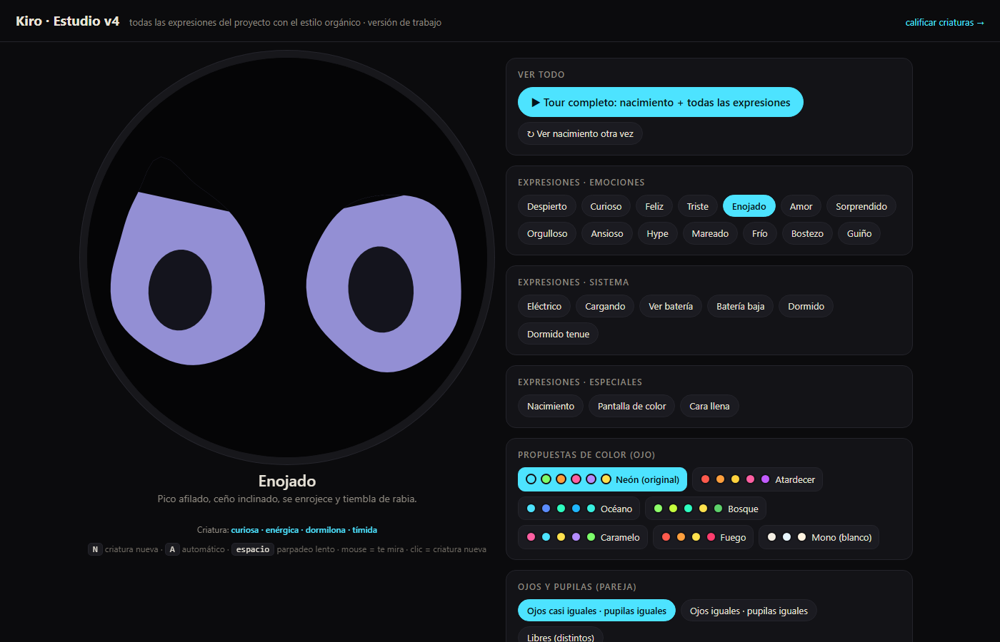
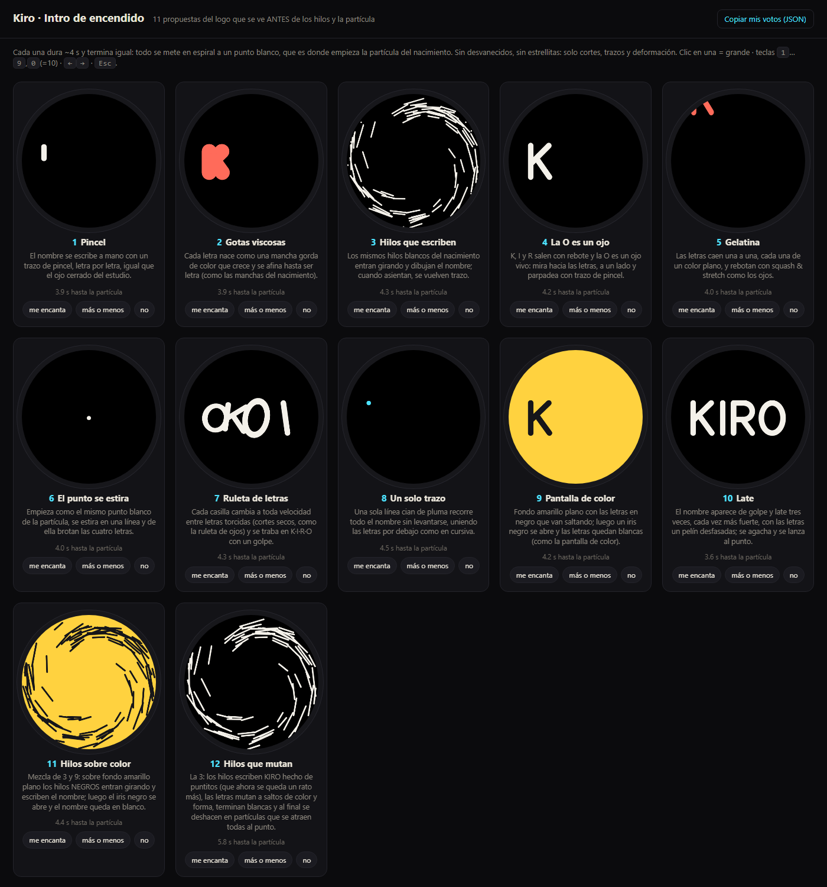
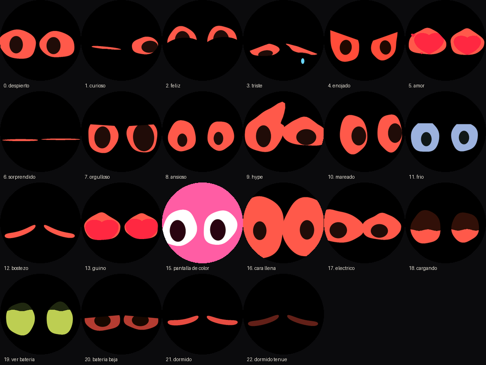
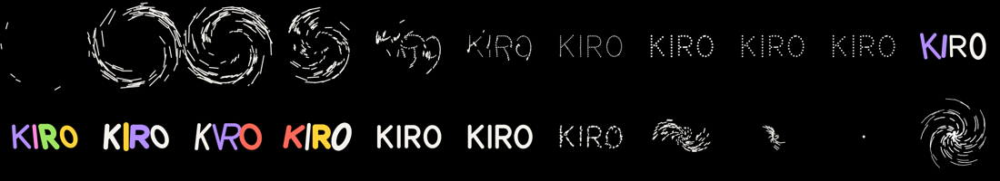
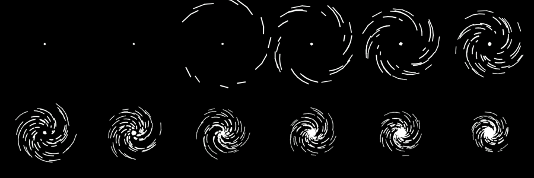

8. Animaciones
Las animaciones se diseñan y aprueban primero en el navegador (estudio/kiro_v4.html, Estudio v4) y después se portan 1:1 al firmware (EyesCore.h). El mismo código del firmware corre en el PC (arnés) para generar las imágenes de esta página.
Pruébalas en vivo
Estudio de animaciones (GitHub Pages) — interactivo: elige una expresión, cambia colores/ojos/pupilas, haz clic para una criatura nueva o pulsa «Tour completo». Capturas:
| Curioso |
Amor |
Enojado |
 |
 |
 |
Intros del logo KIRO (12 propuestas; clic para verlas grandes, teclas 1–9 y 0):

Intro + nacimiento completo — render exacto del firmware.
Las 23 expresiones

Render del firmware real a los 3.2 s de cada expresión (algunas capturas caen a mitad de un parpadeo o de una transición). Colores de ejemplo: cada criatura tiene los suyos.
| ID |
Expresión |
Descripción |
| 0 |
despierto |
Reposo: óvalos suaves, respiración, parpadeo |
| 1 |
curioso |
Cabeza ladeada, un ojo más grande, mira a un lado |
| 2 |
feliz |
Mejillas y euforia |
| 3 |
triste |
Ojos caídos con lágrima |
| 4 |
enojado |
Recorte en V hacia el centro, picos hacia afuera, tono rojo |
| 5 |
amor |
Ojos de corazón y corazones rojos por los lados |
| 6 |
sorprendido |
Ojos que se inflan de golpe |
| 7 |
orgulloso |
Mirada superior, inflado |
| 8 |
ansioso |
Rebote con pupilas chicas |
| 9 |
hype |
Salta y late al compás |
| 10 |
mareado |
Los ojos chapotean contra los bordes |
| 11 |
frío |
Azul pálido, tiritando |
| 12 |
bostezo |
Curva caída ‿ con arrugas, estirada y suspiro |
| 13 |
guiño |
Un ojo en corazón/pincel |
| 14 |
nacimiento |
Ver abajo |
| 15 |
pantalla de color |
Fondo de un color plano + ojos de otro (11 combinaciones) |
| 16 |
cara llena |
Ojos enormes tipo domo |
| 17 |
eléctrico |
Ojos grandes con sacudida |
| 18 |
cargando |
Recipientes que se llenan |
| 19 |
ver batería |
Medidor rojo → naranja → amarillo → lima → esmeralda |
| 20 |
batería baja |
Párpados pesados, color apagado |
| 21 |
dormido |
Arcos de pincel que respiran |
| 22 |
dormido tenue |
Arcos apagados |
Intro KIRO (6.9 s) + nacimiento
Cuando la criatura nace o renace (primer encendido o verde 5 s), primero se ve la intro del nombre y después el nacimiento. Con una criatura ya guardada, al encender no se ve (solo abre los ojos contenta).

- 0–2 s — hilos blancos entran girando y escriben KIRO hecho de puntos.
- 1.9–2.6 s — KIRO en puntos se sostiene.
- 2.6–5.7 s — las letras mutan a saltos de color, grosor e inclinación (acelera y frena), y terminan blancas con un golpe de gelatina.
- 5.7–6.9 s — las letras se deshacen en partículas que se atraen al punto blanco central.
- Transición — los hilos del nacimiento salen de los bordes de la pantalla y se meten en espiral (3.4 s, gruesos y calmados al principio).

Nacimiento (~38 s): 16 hilos blancos → partícula-nube que se alimenta → explosión → dos manchas viscosas → ojos de nube → ruleta de siluetas y colores → cierre por deformación (el contorno se vuelve el trazo de pincel; el color cambia con el ojo cerrado) → abre los ojos.
Animación completa (render exacto del firmware, 30 fps, ~46 s): img/intro_completa_kiro.gif y la página estudio/intro_completa.html.
Propuestas de intro exploradas (12): estudio/intro_kiro_10.html. La elegida es la 12, "Hilos que mutan".
Estilo
Siluetas de boceto (huevo de base plana + picos), 2 colores planos (ojo + pupila oscura del mismo tono), sin brillos ni degradados, pupilas con resorte propio, ojos asimétricos, ojo cerrado como trazo de pincel, sin desvanecidos.
Estudio web y herramientas
estudio/kiro_v4.html — todas las expresiones y el nacimiento (abrir en Chrome).estudio/calificar_50.html — hoja para calificar 50 criaturas base (guarda un JSON de votos).alternativa_genoma_clips/ — sistema anterior (genoma + 141 clips aditivos), documentado y no usado.
Reacciones previstas con la PCB
Con el LIS3DHTR se conectarán: sacudida suave → curioso, sacudida fuerte → mareo + enojo, quietud → sueño, tap×3 → amor, vibración rítmica → hype, temperatura → frío/calor. La lógica de movimiento probada con señales sintéticas está en alternativa_genoma_clips/firmware_sistema_viejo/Motion.h (se adaptará al motor actual).